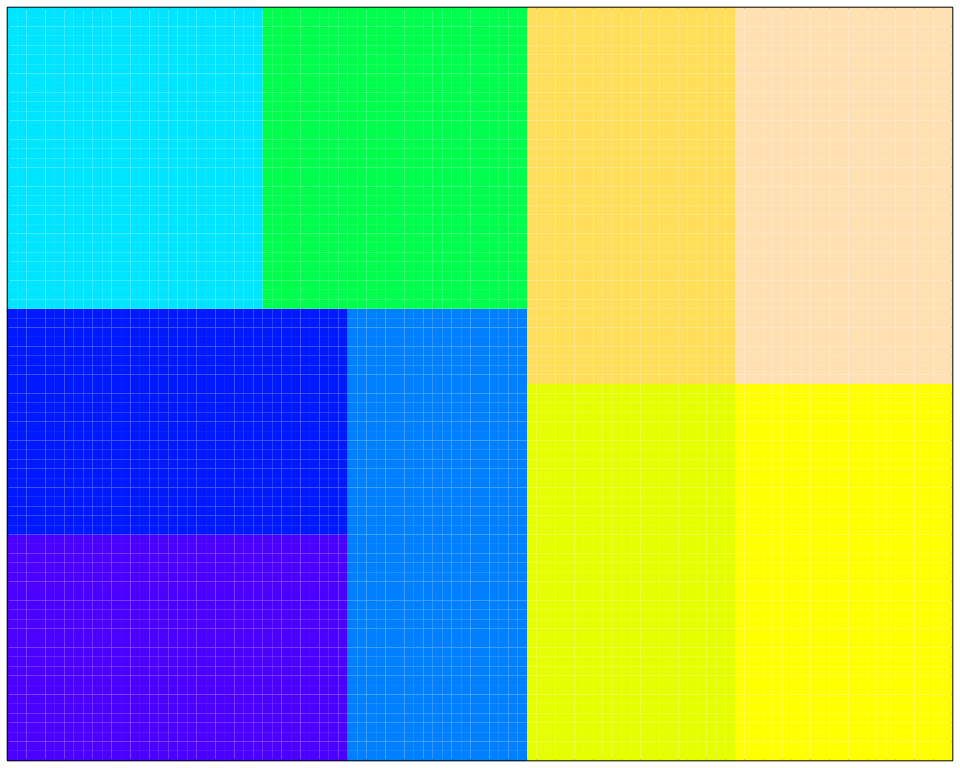
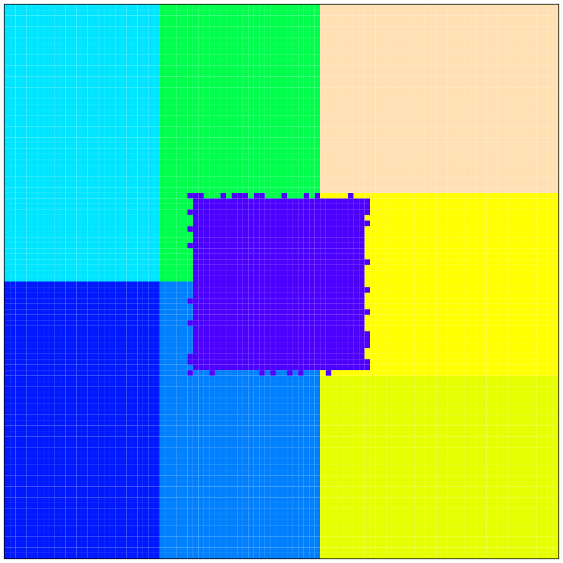

vignettes/SI7.Rmd
SI7.RmdThe default sub-models of GMSE (resource, observation, manager, and user) use a small number of default data structures to hold the information needed in simulations. While these default sub-models do not necessarily need to be used in every run in GMSE (see use of gmse_apply), they will be used in any run of the gmse function, and in any call of the gmse_apply function that does not run with entirely custom sub-models. Simulation and model inference do not require an understanding of the default data structures, but such an understanding can be especially useful when running gmse_apply if there is a need to extract uncommonly used information, change key simulated values (e.g., landscape properties, agent budgets, or resource movement rules, as in Advanced case study options), or build custom individual-based sub-models. Here we provide a brief explanation of the following key data structures (each name below is listed as it is named in the output gmse_apply when get_res = "Full").
AGENTSresource_array (or RESOURCES)observation_array (or OBSERVATION)manager_array (or COST)user_array (or ACTION)LANDNote that these are not the only data structures used in GMSE, but they are the only ones that can be easily modified in GMSE (see, e.g., Advanced case study options), so they are the ones that we focus on here. Additionally, any custom subfunction that returns an array rather than a single value should adhere to the same structure as these defaults if any default GMSE functions are to be used in gmse_apply. We can investigate each data structure by running a single simulation of gmse_apply.
sim <- gmse_apply(get_res = "Full");
The full list output of sim holds each structure by name (in the case where two names are used, e.g., resource_array and RESOURCES, both are identical, but the lower case resource_array takes precedence in case of a change). Each data structure can be examined, changed, and incorporated into a new simulation (e.g., new_sim <- gmse_apply(old_list = sim)).
The AGENTS data structure is a two dimensional array with a fixed number of 27 columns and a number of rows that is always equal to the sum of the number of manager and users (i.e., each row is an individual agent).
print(sim$AGENTS);
## [,1] [,2] [,3] [,4] [,5] [,6] [,7] [,8] [,9] [,10] [,11] [,12] [,13] [,14]
## [1,] 1 0 0 0 49 20 50 0 10 0 43 0 0 10000
## [2,] 2 1 0 0 96 19 50 0 10 0 0 0 0 0
## [3,] 3 1 0 0 19 26 50 0 10 0 0 0 0 0
## [4,] 4 1 0 0 2 77 50 0 10 0 0 0 0 0
## [5,] 5 1 0 0 9 13 50 0 10 0 0 0 0 0
## [,15] [,16] [,17] [,18] [,19] [,20] [,21] [,22] [,23] [,24] [,25] [,26]
## [1,] 0 9508.5 1000 0 -1.17 0 0 0 0 0 0 0
## [2,] 0 0.0 1000 0 -1.30 0 0 0 0 0 0 0
## [3,] 0 0.0 1000 0 -1.30 0 0 0 0 0 0 0
## [4,] 0 0.0 1000 0 -1.30 0 0 0 0 0 0 0
## [5,] 0 0.0 1000 0 -1.30 0 0 0 0 0 0 0
## [,27]
## [1,] 0
## [2,] 0
## [3,] 0
## [4,] 0
## [5,] 0In the default case above, there are five agents (one manager and four users), each represented by a unique row. Columns in the array represent the agent traits listed below.
land_ownership = FALSE)Note that for the perceptions of the efficacy of different actions (columns 18-24), this relates to whatever it is that the agents are acting upon. For example, for columns 18-22, actions are on the resources, so if an agent’s perception of the efficacy of scaring is -1, this means that they believe that scaring a resource will decrease the number of resources affecting them by 1 (lower default values for landowners are caused based on the probability of a scared resource landing on a different cell owned by the same agent). For columns 23-24, actions are on the landscape, so if an agent tends the crop on one landscape cell, this value defines an agent’s perception of how much yield on that cell will increase.
It is obvious from the above list that several columns represent traits that are either typically ignored or currently not in use. This is intended to allow for easier future development of default model options and potential customisation of sub-models in gmse_apply. We anticipate that future versions of GMSE will contain multiple user types with unique traits and among-user interactions.
The resource_array (also accessible as RESOURCES) is a two dimensional array with a fixed number of 22 columns and a number of rows that is always equal to the total number of resources (each row is an individual resource). In the above simulation, sim$resource_array includes 1094 rows, so we only print out the first eight for illustration.
print(sim$resource_array[1:8,]);
## [,1] [,2] [,3] [,4] [,5] [,6] [,7] [,8] [,9] [,10] [,11] [,12] [,13] [,14]
## [1,] 1 1 0 0 41 19 20 1 0 0.3 0 3 0 0
## [2,] 3 1 0 0 25 8 20 1 0 0.3 0 2 0 0
## [3,] 5 1 0 0 10 25 20 1 0 0.3 0 5 0 0
## [4,] 6 1 0 0 57 30 20 1 0 0.3 0 4 0 0
## [5,] 7 1 0 0 10 3 20 1 0 0.3 0 5 0 0
## [6,] 8 1 0 0 29 70 20 1 0 0.3 0 5 0 0
## [7,] 10 1 0 0 93 91 20 1 0 0.3 0 4 0 0
## [8,] 13 1 0 0 62 15 20 1 0 0.3 0 2 0 0
## [,15] [,16] [,17] [,18] [,19] [,20] [,21] [,22]
## [1,] 0.5 0 0 0 0 0 0 1
## [2,] 0.5 0 0 0 0 0 0 1
## [3,] 0.5 0 0 0 0 0 0 1
## [4,] 0.5 0 0 0 0 0 0 1
## [5,] 0.5 0 0 0 0 0 0 1
## [6,] 0.5 0 0 0 0 0 0 1
## [7,] 0.5 0 0 0 0 0 0 1
## [8,] 0.5 0 0 0 0 0 0 1Columns in the resource array represent the individual resource traits listed below.
In the case of columns 16-20, the value is either zero (if no action has occurred), or some positive integer that matches the ID of the agent that has performed the act (e.g., if column 17 equals 3, then that means that the agent with ID = 3 culled the resource in the corresponding row; where more than one agent’s action is possible per time step – as in scaring – the integer reflects the most recently acting agent). We anticipate that future versions of gmse will contain multiple resource types, and might add columns to include additional resource traits.
The observation_array (also accessible as OBSERVATION) is a two dimensional array, the number of rows and columns of which depend on the type of observation being made (i.e., observe_type, which can take integer values from 0-3; see the GMSE reference manual for more information about built-in observation types that are available in GMSE). The first 20 columns of observation_array contain the same individual resource traits as in resource_array, while any additional columns provide information about how and when a resource was observed. The number of rows in observation_array is always equal to or less than that of resource_array; each resource that is observed at least once is placed into one unique row, while unobserved resources are not included as rows in the observation_array. In sim, there are 43 rows, meaning that 1051 resources were not observed at all in this time step. Below, we print out the first eight rows of the observation array.
print(sim$observation_array[1:8,]);
## [,1] [,2] [,3] [,4] [,5] [,6] [,7] [,8] [,9] [,10] [,11] [,12] [,13] [,14]
## [1,] 1 1 0 0 41 19 20 1 0 0.3 0 3 1 0
## [2,] 6 1 0 0 57 30 20 1 0 0.3 0 4 1 0
## [3,] 31 1 0 0 42 11 20 1 0 0.3 0 4 1 0
## [4,] 39 1 0 0 51 10 20 1 0 0.3 0 3 1 0
## [5,] 47 1 0 0 59 11 20 1 0 0.3 1 5 1 0
## [6,] 49 1 0 0 47 11 20 1 0 0.3 2 4 1 0
## [7,] 115 1 0 0 47 26 20 1 0 0.3 0 2 1 0
## [8,] 164 1 0 0 50 26 20 1 0 0.3 0 2 1 0
## [,15] [,16] [,17] [,18] [,19] [,20] [,21] [,22] [,23] [,24]
## [1,] 0.5 0 0 0 0 0 0 1 0 1
## [2,] 0.5 0 0 0 0 0 0 1 0 1
## [3,] 0.5 0 0 0 0 0 0 1 0 1
## [4,] 0.5 0 0 0 0 0 0 1 0 1
## [5,] 0.5 0 0 0 0 0 0 1 0 1
## [6,] 0.5 0 0 0 0 0 0 1 0 1
## [7,] 0.5 0 0 0 0 0 0 1 0 1
## [8,] 0.5 0 0 0 0 0 0 1 0 1In the case of the default parameters, the observation array has only two additional columns; the first added column 21 is currently unused, and all values in this column are zero. The second added column 22 contains a value of 1 confirming that the resource was observed. Additional options will add different numbers of columns with different values. For example, when observe_type = 0 (managers observe all resources on a random subset of the landscape, the size of which is determined by their distance of vision) but times_observe > 1, managers sample more than one random subset of the landscape. A new column is added for each sampled subset, and a 1 is placed in the relevant column if the resource is observed (these collected data are then used to estimate population size). An example where times_observe = 4 is shown below.
sim_t0_4 <- gmse_apply(get_res = "Full", times_observe = 4); print(sim_t0_4$observation_array[1:8,]);
## [,1] [,2] [,3] [,4] [,5] [,6] [,7] [,8] [,9] [,10] [,11] [,12] [,13] [,14]
## [1,] 8 1 0 0 37 71 20 1 0 0.3 1 2 1 0
## [2,] 9 1 0 0 47 64 20 1 0 0.3 0 4 1 0
## [3,] 10 1 0 0 71 94 20 1 0 0.3 0 5 1 0
## [4,] 13 1 0 0 43 80 20 1 0 0.3 1 3 1 0
## [5,] 16 1 0 0 73 89 20 1 0 0.3 0 5 1 0
## [6,] 22 1 0 0 77 84 20 1 0 0.3 1 4 1 0
## [7,] 31 1 0 0 80 21 20 1 0 0.3 0 3 1 0
## [8,] 33 1 0 0 81 18 20 1 0 0.3 0 5 1 0
## [,15] [,16] [,17] [,18] [,19] [,20] [,21] [,22] [,23] [,24] [,25] [,26]
## [1,] 0.5 0 0 0 0 0 0 1 0 0 0 1
## [2,] 0.5 0 0 0 0 0 0 1 0 0 0 1
## [3,] 0.5 0 0 0 0 0 0 1 0 1 0 0
## [4,] 0.5 0 0 0 0 0 0 1 0 0 0 1
## [5,] 0.5 0 0 0 0 0 0 1 0 1 0 0
## [6,] 0.5 0 0 0 0 0 0 1 0 0 1 0
## [7,] 0.5 0 0 0 0 0 0 1 0 0 0 0
## [8,] 0.5 0 0 0 0 0 0 1 0 0 0 0
## [,27]
## [1,] 0
## [2,] 0
## [3,] 0
## [4,] 0
## [5,] 0
## [6,] 0
## [7,] 1
## [8,] 1This process simulates the data collection of resources (and potentially resource trait measurement) as might be performed by observers within the system. It therefore takes a virtual ecologist approach; this enables the integration of theory and empirical work and can improve the mechanistic understanding of social-ecological systems (Zurell et al. 2010).
For context, it might be easier to understand manager_array after reading about user_array below. The manager_array (also accessible as COST) is a three dimensional array, each layer of which corresponds to a unique agent (rows in AGENT correpond to layers in manager_array). Hence, in the simulation output sim$manager_array, there are 5 layers. Each layer in manager_array has 13 columns, and a number of rows that varies depending on the number of agents and resource types. As of GMSE v0.4.0.7, only the first three rows are used. Two layers of sim$manager_array are shown below, the first being that of the manager and the second being that of the first user.
print(sim$manager_array[,,1:2]);
## , , 1
##
## [,1] [,2] [,3] [,4] [,5] [,6] [,7] [,8] [,9] [,10]
## [1,] 100001 100001 100001 100001 100001 100001 100001 100001 100001 100001
## [2,] 100001 100001 100001 100001 100001 100001 100001 100001 100001 100001
## [3,] 100001 100001 100001 100001 100001 100001 100001 100001 10 100001
## [4,] 100001 100001 100001 100001 100001 100001 100001 100001 100001 100001
## [5,] 100001 100001 100001 100001 100001 100001 100001 100001 100001 100001
## [6,] 100001 100001 100001 100001 100001 100001 100001 100001 100001 100001
## [7,] 100001 100001 100001 100001 100001 100001 100001 100001 100001 100001
## [,11] [,12] [,13]
## [1,] 100001 100001 10
## [2,] 100001 100001 10
## [3,] 100001 100001 10
## [4,] 100001 100001 100001
## [5,] 100001 100001 100001
## [6,] 100001 100001 100001
## [7,] 100001 100001 100001
##
## , , 2
##
## [,1] [,2] [,3] [,4] [,5] [,6] [,7] [,8] [,9] [,10]
## [1,] 100001 100001 100001 100001 100001 100001 100001 100001 62 100001
## [2,] 100001 100001 100001 100001 100001 100001 100001 100001 100001 100001
## [3,] 100001 100001 100001 100001 100001 100001 100001 100001 100001 100001
## [4,] 100001 100001 100001 100001 100001 100001 100001 100001 100001 100001
## [5,] 100001 100001 100001 100001 100001 100001 100001 100001 100001 100001
## [6,] 100001 100001 100001 100001 100001 100001 100001 100001 100001 100001
## [7,] 100001 100001 100001 100001 100001 100001 100001 100001 100001 100001
## [,11] [,12] [,13]
## [1,] 100001 100001 10
## [2,] 100001 100001 10
## [3,] 100001 100001 100001
## [4,] 100001 100001 100001
## [5,] 100001 100001 100001
## [6,] 100001 100001 100001
## [7,] 100001 100001 100001Each element in the array indicates the cost of performing a particular action. In the code, this is the cost of changing an element in user_array (which has the same dimensions as manager_array). The minimum value in sim$manager_array is therefore 10, reflecting the default minimum_cost value of 10. The maximum value is 100001, which is one higher than the maximum allowed manager or user budget. Where a cost is 100001, actions can therefore never be performed. An explanation of the rows and columns of manager_array is provided below in the description of user_array.
The user_array (also accessible as ACTION) is a three dimensional array, each layer of which corresponds to a unique agent. When considering the three dimensional user_array, it is helpful to keep in mind that each layer corresponds to the actions of a particular agent, that each column corresponds to a particular type of action, and that each row corresponds to a particular resource, agent, or group that the action will affect. The cost of performing any action in this array is held in manager_array, wherein an action’s cost in manager_array is held in the same array element as the action itself in user_array. Recall from the manager array that the first layer of user_array corresponds to the manager actions, and that remaining layers correspond to user actions; there are therefore as many layers in user_array as there are agents in the model, and each row of AGENTS corresponds to equivalent layer of user_array (e.g., the manager agent, ID = 1, is in the first row of AGENTS and the first layer of user_array). The first two layers of user_array are shown below.
print(sim$user_array[,,1:2]);
## , , 1
##
## [,1] [,2] [,3] [,4] [,5] [,6] [,7] [,8] [,9] [,10] [,11] [,12] [,13]
## [1,] -2 1 0 0 1000.00000 0 0 0 0 0 0 0 0
## [2,] -1 1 0 0 0.00000 0 0 0 0 0 0 0 0
## [3,] 1 1 0 0 24.94331 0 0 10 62 10 10 10 58
## [4,] 2 1 0 0 0.00000 0 0 0 0 0 0 0 0
## [5,] 3 1 0 0 0.00000 0 0 0 0 0 0 0 0
## [6,] 4 1 0 0 0.00000 0 0 0 0 0 0 0 0
## [7,] 5 1 0 0 0.00000 0 0 0 0 0 0 0 0
##
## , , 2
##
## [,1] [,2] [,3] [,4] [,5] [,6] [,7] [,8] [,9] [,10] [,11] [,12] [,13]
## [1,] -2 1 0 0 -1 0 0 0 16 0 0 0 0
## [2,] -1 1 0 0 0 0 0 0 0 0 0 0 0
## [3,] 1 1 0 0 0 0 0 0 0 0 0 0 0
## [4,] 2 1 0 0 0 0 0 0 0 0 0 0 0
## [5,] 3 1 0 0 0 0 0 0 0 0 0 0 0
## [6,] 4 1 0 0 0 0 0 0 0 0 0 0 0
## [7,] 5 1 0 0 0 0 0 0 0 0 0 0 0Note that there are more columns in this array than there are possible actions in GMSE. This is because there are several columns that do not map to actions per se, but properties of agents. As of GMSE v0.4.0.7, these properties cannot be changed by other agents. Column of user_array are as follows.
sim$user_array[3, 1, 1] = 1), actions affect all other agents in the model. As of GMSE v0.4.0.7, all rows except 1-3 are unused because agents do not affect one anothers actions individually; they either affect all other agents’ actions indiscriminately (in the case of the manager setting policy) or do not (directly) affect other agents’ actions at all (in the case of users). This data structure, however, is designed so that future versions of GMSE will allow users to affect one another directly (representing, e.g., different groups of agents lobbying for different interests, among-user conflict, etc.).manage_target, while the value in the third row is the change in resource number needed to achieve the target value (i.e., manage_target = 1000, and the manager’s estimate is sim$observation_vector = 975.0566893. The former minus the latter is 24.94331).tend_crop actions (the number of cells on which crops are tended by users, which always is perfomed on users’ own land, cannot be affected by the manager, and always equals minimum_cost).lambda), which in row 3 of the manager’s layer 1 is interpreted as the feeding cost set by the manager for users. Further, in row 2 for users (where column 1 equals -1), this value is instead the number of kill_crop actions (the number of cells on which crops are destroyed by users, which always is perfomed on users’ own land, cannot be affected by the manager, and always equals minimum_cost)manage_target.In the genetic algorithm, values in elements of a user_array layer are potentially modified according to each agent’s objective, as constrained by costs in manager_array.
Events in default GMSE sub-models occur on a spatially-explicit landscape LAND, which is stored as a three dimensional array. The size of this landscape is specified with the land_dim_1 and land_dim_2 arguments of GMSE, which determine the length, in cells, of the y and x dimensions of the landscape, respectively (e.g., if land_dim_1 = 10 and land_dim_2 = 1000, then the landscape will be one very long horizontal transect). The total number of landscape cells on which resources and agents can interact is therefore the product of land_dim_1 and land_dim_2. In addition, all landscapes have three layers, which hold three separate values of information for each x-y location. The first layer is unused as of GMSE v0.6.0.4; the second layer holds crop production on a cell, and the third layer holds the owner of the cell (corresponding to the ID of an agent, where the manager’s ID = 0 defines public land). An \(8 \times 8\) portion of the landscape from sim is shown below.
print(sim$LAND[1:8,1:8,]);
## , , 1
##
## [,1] [,2] [,3] [,4] [,5] [,6] [,7] [,8]
## [1,] 1 1 1 1 1 1 1 1
## [2,] 1 1 1 1 1 1 1 1
## [3,] 1 1 1 1 1 1 1 1
## [4,] 1 1 1 1 1 1 1 1
## [5,] 1 1 1 1 1 1 1 1
## [6,] 1 1 1 1 1 1 1 1
## [7,] 1 1 1 1 1 1 1 1
## [8,] 1 1 1 1 1 1 1 1
##
## , , 2
##
## [,1] [,2] [,3] [,4] [,5] [,6] [,7] [,8]
## [1,] 1 1.0 0.25 1 1 1.0 0.5 1.0
## [2,] 1 1.0 1.00 1 1 1.0 1.0 1.0
## [3,] 1 1.0 1.00 1 1 1.0 1.0 0.5
## [4,] 1 1.0 1.00 1 1 1.0 1.0 0.5
## [5,] 1 0.5 1.00 1 1 1.0 1.0 1.0
## [6,] 1 0.5 1.00 1 1 0.5 1.0 1.0
## [7,] 1 1.0 1.00 1 1 0.5 1.0 1.0
## [8,] 1 1.0 1.00 1 1 1.0 1.0 1.0
##
## , , 3
##
## [,1] [,2] [,3] [,4] [,5] [,6] [,7] [,8]
## [1,] 1 1 1 1 1 1 1 1
## [2,] 1 1 1 1 1 1 1 1
## [3,] 1 1 1 1 1 1 1 1
## [4,] 1 1 1 1 1 1 1 1
## [5,] 1 1 1 1 1 1 1 1
## [6,] 1 1 1 1 1 1 1 1
## [7,] 1 1 1 1 1 1 1 1
## [8,] 1 1 1 1 1 1 1 1In the case of the above, all of the cells in this square patch of landscape are owned by agent 1 (i.e., the manager; see sim$LAND[,,3]). This occurs if land_ownership = FALSE and users are prohibited from owning land. We can also see that crop production on this patch of land has been decreased from its initialised value of 1 in several cells as a consequence of consumption by resources (see sim$LAND[„2]). By default, landscape yield starts each time step at a value of 1, and hence replenishes in each time even if consumed in the previous time step. Users that own landscape cells (when land_ownership = TRUE) can increase yield above 1 using the tend_crop_yld action. If resources consume landscape yield, the value of yield can drop to a minimum value of zero.
In Advanced case study options, we show how landscape cell values can be manipulated to customise the placement of land ownership. By default, GMSE v0.6+ places the ownership of landscape cells using a shortest-splitline algorithm (see the lab notebook for a detailed explanation). The algorithm splits the landscape evenly into smaller and smaller rectangles until a sufficient number of rectangles are produced for all users to own a similar amount of land (note that how uniformly land is partitioned among users will naturally be influenced by how evenly the total number of landscape cells can be divided among them). Below is an example in which land of land_dim_1 = 64 and land_dim_2 = 64 is partitioned equally among eight users.
Note that all users own exactly 512 cells on the landscape. A bit more complexity can be generated by an uneven landscape of land_dim_1 = 80 and land_dim_2 = 100, with land allocated among nine users.

In the case of the above landscape, the number of cells allocated to each user ranges from 864 to 920.
ownership_var
In addition, whereas in previous versions variable landscape ownership among users had to be customised using gmse_apply, GMSE v. 0.6+ now includes an additional parameter ownership_var, which takes effect when land_ownership = TRUE. The value of this parameter is expected to be >=0 and <1. At its default value of 0, land ownership is equal among users as demonstrated in the code above. Values >0 increase the extent of variability of landownership among users; in technical terms, ownership_var controls the extent to which each split in the shortest-splitline algorithm is proportional to the number of users the landscape is to be divided into, with larger numbers shifting the split away from even distribution. In practical terms, this means that increasing values of ownership_var produce more unevenly distributed landscapes among users. For example, a value of ownership_var = 0.1 produces a relatively limited about of inequity in landscape distribution among users.
As can be seen from the frequency distribution, in this case, all users own between 1% and 4.3% of the landscape.
By contrast, when increasing ownership_var to 0.8, overall inequity increases substantially:
In the latter case, user ownership varies between <0.001% and 16.7%.
It should be noted that it is still entirely possible for the user to customise landscapes to whatever extent necessary, using custom gmse_apply loops as described previously; however, the new ownership_var provides an option in GMSE to alter landscape ownership in a relatively straightforward way.
Public land is placed on the landscape whenever public_land > 0, with public_land defining the proportion of landscape cells that are not be owned by an user. When the expected number of cells to be allocated to public land is calculated to be equal to or greater than that allocated to a single user, public land is allocated in a block as is with users. For example, the below shows a landscape in which public_land = 0.5, with seven other users owning land.
Public land is in dark blue above. If, however, the amount of public land is very small, the land is added to the centre of the landscape. Below illustrates a landscape that also includes seven land owning users, but with public_land = 0.05.

Where public_land is small, the default landscape ownership algorithm thereby attempts to be as precise as possible in allocating cell numbers. Of course, as previously mentioned, ownership can also be manually specified when using gmse_apply.
We have focused on the data structures AGENTS, resource_array, observation_array, manager_array, user_array, and LAND because these are the data structures that can be most readily manipulated to customise GMSE simulations. An example of how to do this within a loop using gmse_apply can be found in Advanced case study options. While other data structures exist within GMSE (e.g., see the output of gmse_apply when get_res = "Full"), we do not recommend manipulating these structures for custom simulations.
Many data structures contain elements that are unused in GMSE v0.6, and in all cases this is designed for ease of ongoing development of new GMSE features. Requests for new features can be made on GitHub using the GMSE Wiki or the GMSE Issues page.
Zurell, Damaris, Uta Berger, Juliano S Cabral, Florian Jeltsch, Christine N Meynard, Tamara Münkemüller, Nana Nehrbass, et al. 2010. “The virtual ecologist approach: Simulating data and observers.” Oikos 119 (4): 622–35. https://doi.org/10.1111/j.1600-0706.2009.18284.x.